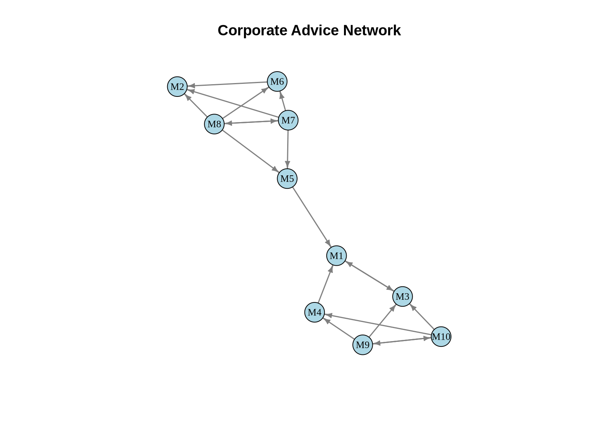

This tutorial demonstrates how to analyze roles and positions in networks using R. Unlike community detection, which looks for cohesive subgroups (cliques, clusters), role analysis seeks to identify actors who behave similarly, even if they are not connected to each other. For example, two teachers in different schools may never interact, but they occupy the same ‘role’ because they have similar relationships with students, principals, and parents.
We will explore structural equivalence, implement the classic CONCOR algorithm, perform blockmodeling, and create image matrices to uncover the underlying role structure of networks.
1.1 Learning Objectives
By the end of this tutorial, you will be able to:
Understand different concepts of structural equivalence
Compute similarity measures between actors based on tie patterns
Implement the CONCOR algorithm for blockmodeling
Perform hierarchical clustering of tie profiles
Create and interpret blockmodels and image matrices
Visualize role structures in networks
Assess the quality of blockmodel fits
1.2 Required Packages
# Load required packageslibrary(igraph)library(ggplot2)# Optional packages (install if needed)if (!require("pheatmap", quietly =TRUE)) {cat("Note: pheatmap not installed. Using base heatmap instead.\n") use_pheatmap <-FALSE} else { use_pheatmap <-TRUE}
Note: pheatmap not installed. Using base heatmap instead.
# Set seed for reproducibilityset.seed(42)
2 Understanding Structural Equivalence
2.1 Concepts
Structural Equivalence is the most stringent definition of position. Two actors are structurally equivalent if they have identical ties to and from the exact same other actors. They are perfectly substitutable in the network structure.
In practice, perfect equivalence is rare. We look for approximate equivalence—actors who have similar patterns of ties.
There are other forms of equivalence, such as:
Structural equivalence: Actors have identical ties to the same others.
Regular equivalence: Actors have ties to others who are themselves equivalent (e.g., two doctors are equivalent because they both treat patients, even if they treat different patients).
This tutorial focuses on structural equivalence, which is the foundation of classical blockmodeling.
2.2 Example Network: Corporate Advice Network
Let’s create a small directed network representing advice-seeking among managers:
# Plot the networkset.seed(42)layout_advice <-layout_with_fr(advice_net)# Set margins to ensure title is within bounding boxpar(mar =c(1, 1, 4, 1))plot(advice_net,layout = layout_advice,vertex.color ="lightblue",vertex.size =15,vertex.label =V(advice_net)$name,vertex.label.cex =0.8,vertex.label.color ="black",edge.color ="gray50",edge.width =1.5,edge.arrow.size =0.5,main ="Corporate Advice Network")

3 Measuring Structural Equivalence
3.1 Correlation-Based Similarity
One common approach is to calculate the Pearson correlation between the tie profiles (rows/columns of the adjacency matrix) of pairs of actors.
High positive correlation (+1): Actors have very similar tie patterns.
High negative correlation (-1): Actors have opposite tie patterns.
Correlation focuses on the pattern or shape of ties, normalizing for the total number of ties.
# Calculate structural equivalence using correlation# For directed networks, we consider both in-ties and out-ties# Custom function for structural equivalencecompute_structural_equiv <-function(adj_mat) { n <-nrow(adj_mat) sim_mat <-matrix(0, n, n)# Combine row and column vectors for each nodefor(i in1:n) {for(j in1:n) {# Correlation between tie profiles profile_i <-c(adj_mat[i,], adj_mat[,i]) profile_j <-c(adj_mat[j,], adj_mat[,j]) sim_mat[i,j] <-cor(profile_i, profile_j) } }rownames(sim_mat) <-colnames(sim_mat) <-rownames(adj_mat)return(sim_mat)}similarity_matrix <-compute_structural_equiv(advice_mat)# Display similarity matrixround(similarity_matrix, 2)
Another approach uses Euclidean distance between tie profiles.
Measures the geometric distance between actors in the multidimensional space defined by their ties.
Unlike correlation, it is sensitive to the volume (number) of ties. Two actors might have the same pattern, but if one has twice as many ties, they will be distant in Euclidean space but highly correlated.
# Count members per positioncat("\nPosition sizes:\n")
Position sizes:
print(table(positions))
positions
1 2 3
3 5 2
5 CONCOR Algorithm
CONCOR (CONvergence of iterated CORrelations) is a classical algorithm specifically designed for blockmodeling. It works on a fascinating mathematical property: if you repeatedly calculate the correlation matrix of a correlation matrix, the values eventually converge to a matrix containing only +1 and -1.
This divides the actors into two distinct groups (blocks). We can then apply the procedure recursively to split these groups further, creating a hierarchical blockmodel.
An image matrix is a simplified representation of the network. Instead of showing ties between individual actors, it shows ties between positions (blocks).
To create it, we calculate the density of ties between every pair of positions. If the density is above a certain threshold (often the overall network density or a specific alpha value), we say there is a ‘1-block’ (a tie between positions). Otherwise, it is a ‘0-block’.
7.1 Compute Image Matrix
# Function to create image matrixcreate_image_matrix <-function(adj_matrix, positions, alpha =0.5) { n_positions <-max(positions) image_mat <-matrix(0, nrow = n_positions, ncol = n_positions)for(i in1:n_positions) {for(j in1:n_positions) {# Get actors in positions i and j actors_i <-which(positions == i) actors_j <-which(positions == j)# Extract block block <- adj_matrix[actors_i, actors_j, drop =FALSE]# Calculate density block_density <-sum(block) /length(block)# Set image based on alpha threshold image_mat[i, j] <-ifelse(block_density >= alpha, 1, 0) } }rownames(image_mat) <-colnames(image_mat) <-paste0("Pos", 1:n_positions)return(image_mat)}# Create image matrix with alpha = 0.5image_mat <-create_image_matrix(advice_mat, positions, alpha =0.5)cat("Image matrix (alpha = 0.5):\n")
Next Steps: Try combining community detection (from practice_1.qmd) with role analysis. Do structurally equivalent actors belong to the same communities? Often they don’t—community detection finds cohesive groups (friends), while role analysis finds similar types of people (e.g., all the “popular kids” might not be friends with each other, but they occupy the same role).